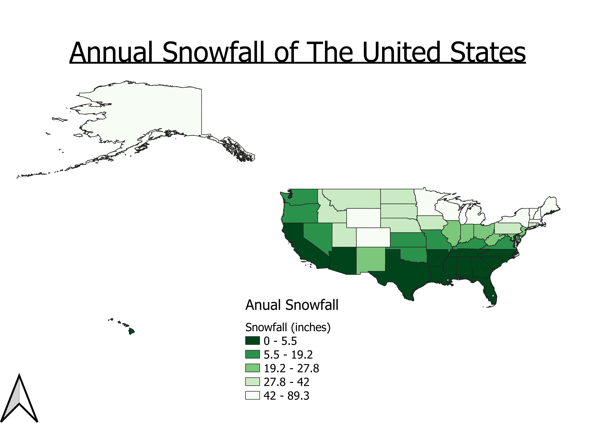

Homework 9: Make a choropleth or proportional symbol map
Trinity Brown
My map depicts the average annual snow fall of each state. I chose to make a map of this data because I am currently thinking of where I would like to move after graduation and I know I do not like cold weather. I chose the color green because to me it represents nice weather when the sky is blue and the trees are green!
Map

Data used for this project
CVS dataset
I had to create this data table myself because i could not find one to download on the internet. I used the following websites for my data.
Link to shapefile